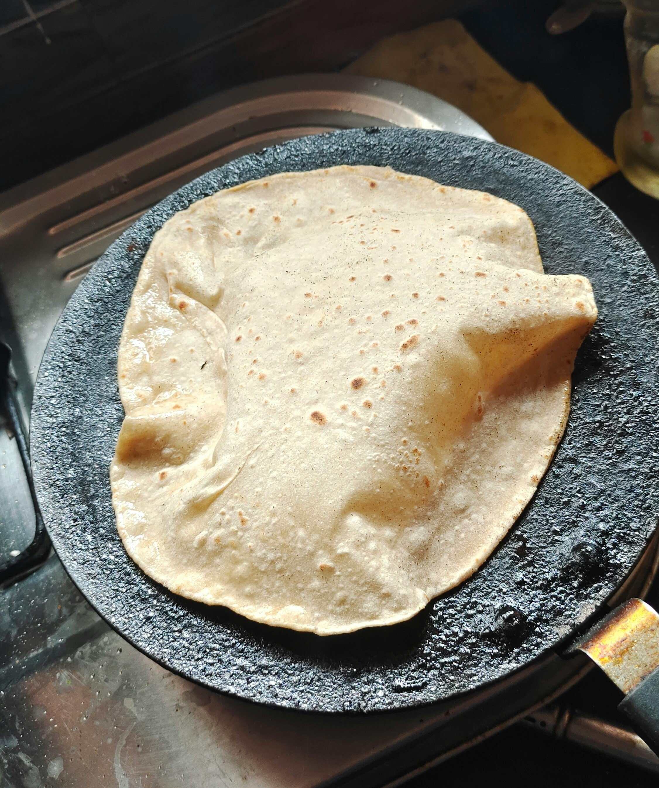

Joshua's Recipes
Home Page
Recipe 1, Scrambled Eggs
Attributions and Credit
Tortillas

The most basic, yet most common item in any hispanic dish, they are easy to make and can
be adapted into any dish like tacos, burritos, quesadillas, etc.
Ingredients:
- 2 cups of corn flour
- 1 or 2 teaspoon/pinches of salt
- 1 1/2 cups of water
Instructions:
- Mix the corn flour and water in a bowl along with the salt
- Knead the mixture until you get a soft dough, if its dry added a tablespoon of water
- Make small and equal amounts of balls from the dough
- Flatten the balls with a tortilla press with plastic or a flatten them with your hands
- Cook the tortillas on medium heat with a skillet/pan and flip them every 30 seconds
- Repeat the process until it spots of brown and black appear and check that its stable
- Wrap the tortillas in a cloth to keep them warm while your cooking the rest
- Repeat steps 4-7 until you run out of the dough balls
Enjoy your homemade tortillas!
Website made by Joshua